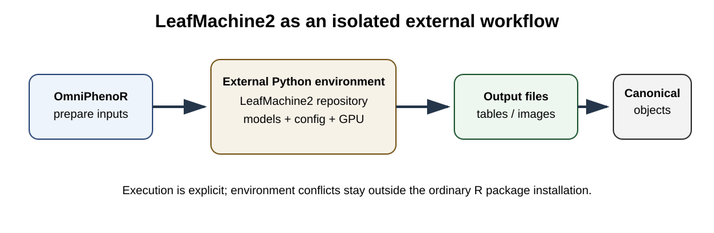

OmniPhenoR LeafMachine2 Integration: External Herbarium Workflows
Source:vignettes/v18-leafmachine2-integration.Rmd
v18-leafmachine2-integration.RmdPurpose
LeafMachine2 is a modular computer-vision system designed for automated extraction of morphological information from digitized herbarium specimens (Weaver and Smith 2023). Its installation, models, configuration files, and GPU dependencies form a substantial external system. OmniPhenoR therefore treats LeafMachine2 as an external executable workflow, not as an ordinary lightweight Python import.

1. Why an external-process adapter
LeafMachine2 may depend on a specific Python/PyTorch/CUDA combination
and a repository-local configuration. Running it in a separate
environment reduces conflicts with R torch, other Python
packages, and unrelated project environments.
pheno_leafmachine_status()
#> # A tibble: 1 × 4
#> available path version note
#> <lgl> <chr> <chr> <chr>
#> 1 FALSE NA NA Set path or option OmniPhenoR.leafmachine2 to a LeafM…A repository can be specified explicitly:
pheno_leafmachine_status("D:/tools/LeafMachine2")2. Dry-run first
The runner is deliberately non-executing by default.
pheno_leafmachine_run(
path = tempdir(),
python = "python",
execute = FALSE
)
#> $program
#> [1] "python"
#>
#> $args
#> [1] "C:/Users/wep69/AppData/Local/Temp/Rtmp4apJpP/LeafMachine2.py"
#>
#> $working_directory
#> [1] "C:/Users/wep69/AppData/Local/Temp/Rtmp4apJpP"
#>
#> $config
#> NULL
#>
#> $execute
#> [1] FALSEFor a real installation, inspect the returned command plan before
setting execute = TRUE.
run <- pheno_leafmachine_run(
path = "D:/tools/LeafMachine2",
python = "D:/tools/LeafMachine2/.venv_LM2/Scripts/python.exe",
execute = TRUE
)3. Configuration discipline
LeafMachine2 configurations should be treated as scientific inputs. Save the exact YAML used for each batch and compute a file hash. If the upstream program expects a repository-local configuration filename, preserve that behavior rather than inventing an undocumented command-line override.
A recommended project structure is:
analysis/
├── leafmachine/
│ ├── configs/
│ │ └── herbarium_batch_2026.yaml
│ ├── input_manifest.csv
│ ├── environment_report.md
│ └── output/
└── R/
└── import_leafmachine.R4. Importing outputs
The importer searches CSV results and attempts to normalize recognizable box columns.
f <- tempfile(fileext = ".csv")
utils::write.csv(
data.frame(
class="leaf",
confidence=.94,
xmin=10, ymin=20, xmax=100, ymax=160
),
f,
row.names=FALSE
)
out <- pheno_leafmachine_import(f)
out
#> <pheno_detection>
#> objects: 1
#> engine: leafmachine2
#> classes: leaf
unlink(f)If a recognized detection table is found, the result becomes a
pheno_detection. Otherwise the importer returns the tabular
outputs so the researcher can build a project-specific normalization
layer.
5. Do not over-normalize
LeafMachine2 can produce measurements that have no direct equivalent in a simple bounding-box schema. Those results should remain available rather than being discarded merely to force every field into a canonical object.
The adapter therefore follows a hierarchy:
- normalize when semantics are clear;
- preserve original fields when semantics are backend-specific;
- attach provenance linking the normalized result to the original output file.
6. Herbarium measurement workflow
specimen image
↓
LeafMachine2 external environment
↓
component detections / segmentations / scale
↓
raw LeafMachine2 tables
↓
pheno_leafmachine_import()
↓
canonical objects + preserved backend measurements
↓
experimental/taxonomic identity7. Scale and physical units
Herbarium images often include rulers or scale information. Do not mix pixel morphology from OmniPhenoR with physical measurements from LeafMachine2 unless the scale transformation is explicit and verified.
If a conversion factor is imported, record:
- source ruler;
- units;
- pixels per unit;
- measurement method;
- confidence/QC state.
8. Resource planning
Large herbarium batches can be RAM- and GPU-intensive. This is another reason not to execute LeafMachine2 during package checks or vignette rendering. Documentation uses frozen compact outputs; full reproduction is a developer/research operation.
9. Validation strategy
A defensible study should include manually measured or independently annotated specimens covering:
- small and large leaves;
- overlapping leaves;
- fragmented specimens;
- labels or archival objects near leaves;
- different ruler styles;
- different institutions/scanners;
- damaged or folded specimens.
Validation should target the final trait, not only component detection.
10. Common mistakes
- Assuming a detected repository implies a working CUDA/PyTorch environment.
- Updating LeafMachine2 without freezing the configuration and model state used for a study.
- Dropping backend-specific measurements during import.
- Mixing measurements from different scale-calibration routes without audit.
- Running a large external pipeline automatically as part of vignette generation.
Final perspective
The LeafMachine2 integration is deliberately conservative. OmniPhenoR coordinates execution, import, normalization, identity, and provenance while leaving the specialist herbarium pipeline in its own environment.